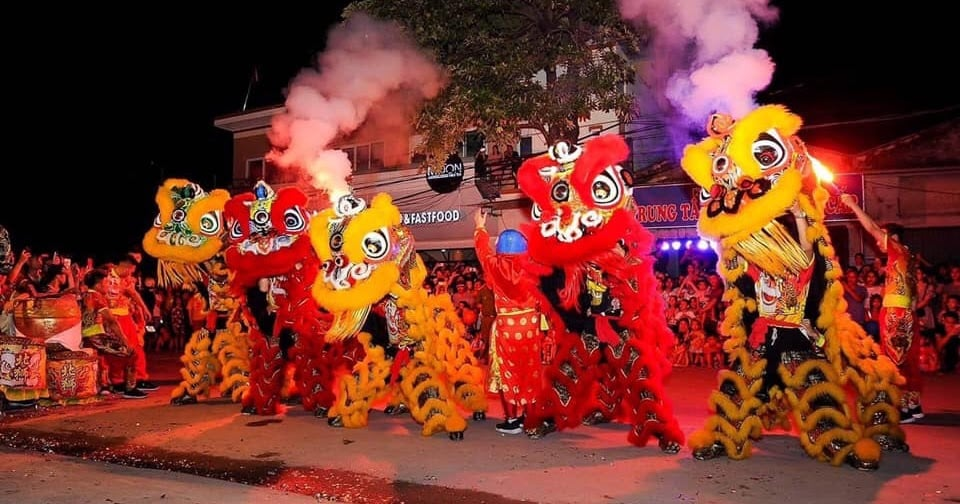
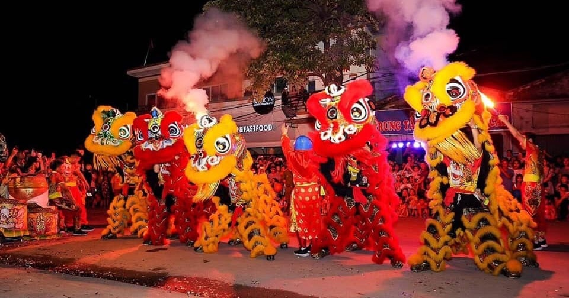

Mid-Autumn Vietnam
Every Vietnamese child dreams about an amazing Tết Trung Thu with his or her own brightly lit
lantern and a belly full of mooncakes.
Tết Trung Thu or Mid-autumn Festival, is also known in Vietnam as the “Children’s Festival”.
This year, the Mid-autumn Festival will be held October 1, 2020, in the middle of the eighth lunar month,
however, preparations begin far in advance.
Here’s how to make the most of this magical holiday.
Lanterns adorn cities across Vietnam during Mid-autumn Festival.
While the Mid-autumn Festival originated in China and is celebrated in many Asian countries, the Vietnamese
version has its own traditions and legends.
Our best-known tale is about a man named Cuội who hung on to a magical banyan tree as it floated up to the
moon.
We say that if you look closely at the full moon, you can see the shadow of a man sitting under a tree.
Children parade lanterns in the streets the night of Mid-autumn Festival to help light the way to earth for Cuội
from the moon.
As an important festival for children, toys can be found all over Vietnam's cities the weeks before
Mid-autumn.
In the weeks before Tết Trung Thu, you will see and hear groups of lion dancers practicing on the streets.
Mooncake stalls appear on every other corner, pop-ups with elaborately decorated boxes filled with a variety of
mystery cakes and fillings.
City districts team up with preparations of toys, lanterns, and colorful masks in anticipation.
Mooncakes are best enjoyed with a hot cup of green tea.
All across Vietnam, families welcome Tết Trung Thu by placing a five-fruit tray and cakes on their ancestral
altar.
We offer the food to our ancestors and worship before feasting on mooncakes—usually outside under the light of
the moon.
The two most common types are bánh dẻo (soft, sticky cakes with a mochi-texture) and bánh nướng (baked cakes
with a thick wheat crust).
Families pick up lanterns, toys, and treats in the alleyways of Ho Chi Minh City's Cholon
District.
On the night of the full moon, children bearing brightly colored lanterns form raucous processions and tour
their neighborhoods singing songs.
You will see a male dancer wearing a round happy-faced mask that symbolizes the moon.
This is the Earth God, Ông Địa, who represents the fullness of the earth and reminds onlookers to give thanks
for its bounty.
Lion heads on display for purchase in Ho Chi Minh City.
Lion dancing or múa lân is an essential element of the Mid-autumn festivities.
Groups of children gather, each carrying a red lantern.
Excitement peaks when drumbeats ring out from down the dark street.
Mid-autumn is best enjoyed by moonlit strolls in major destinations.